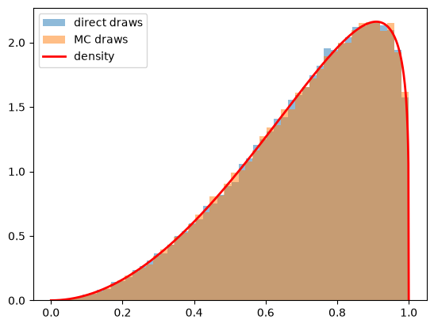
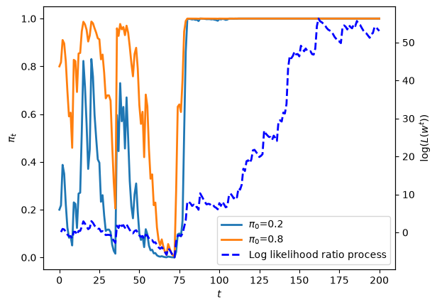
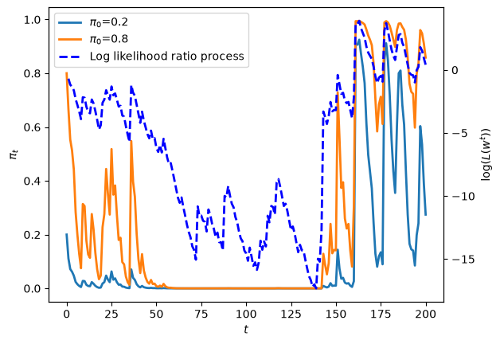
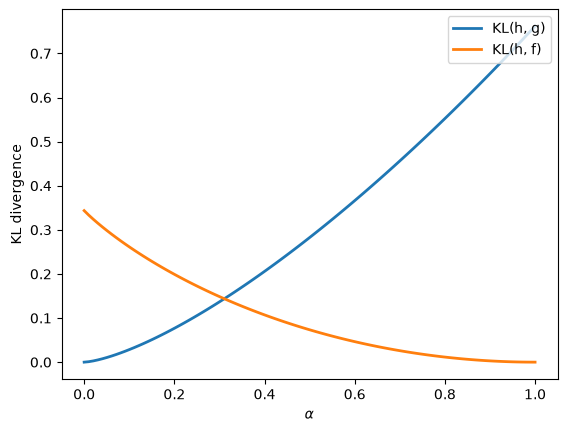
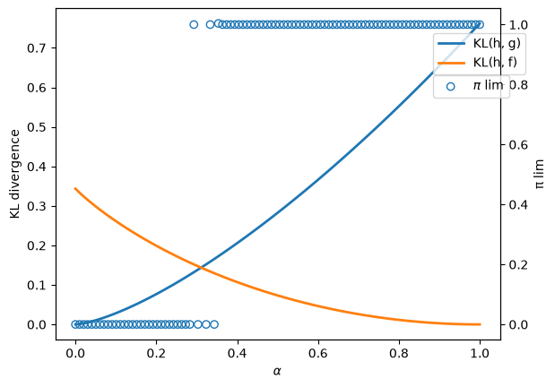
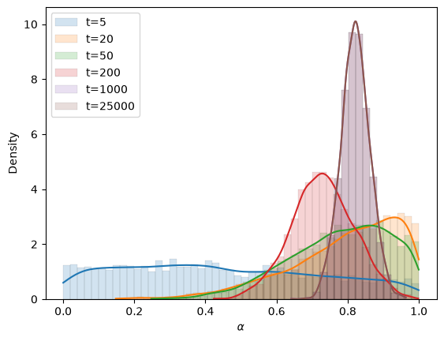
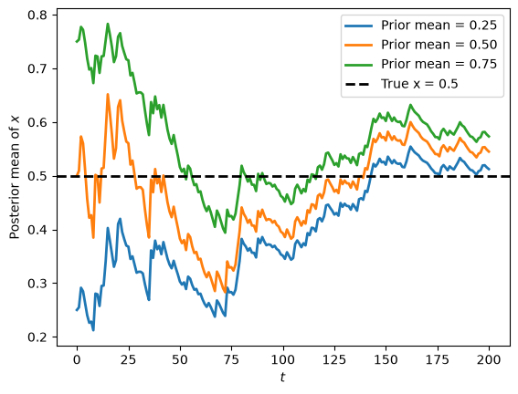
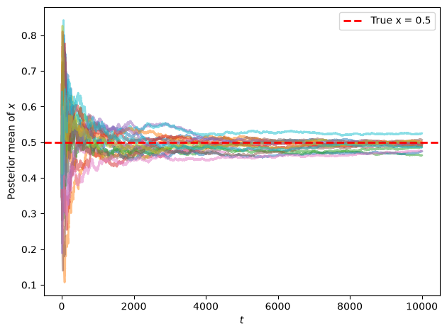

32. 错误模型#
GPU
本讲座是在配有GPU的机器上构建的——不过没有GPU也可以运行。
Google Colab 提供带GPU的免费套餐，使用方法如下：
点击右上角的”播放”图标
选择 Colab
将运行时环境设置为包含GPU
!pip install numpyro
32.1. 概述#
这是似然比过程和贝叶斯学习的续篇。
我们将讨论创建复合彩票的两种方式及其后果。
复合彩票可以说是创建了一个_混合分布_。
我们构建复合彩票的两种方式在时间安排上有所不同。
其中一种方式是在时间开始时一次性在两个可能的概率分布之间进行混合
另一种方式是在每个时期都在相同的两个可能的概率分布之间进行混合
这个统计设定与那个讲座中研究的问题相近但不完全相同。
在那个讲座中,有两个可能支配非负随机变量 \(W\) 连续抽取的独立同分布过程。
自然界一劳永逸地决定是从分布 \(f\) 还是从分布 \(g\) 中进行一系列独立同分布抽取。
那个讲座研究了一个同时知道 \(f\) 和 \(g\) 但不知道自然界在时间 \(-1\) 选择了哪个分布的代理人。
该代理人通过假设自然界抛一个不公平的硬币来选择 \(f\) 或 \(g\),其中选择概率分布 \(f\) 的概率为 \(\pi_{-1}\),来表示这种无知状态。
这个假设使得代理人能够构建一个关于随机序列 \(\{W_t\}_{t=0}^\infty\) 的主观联合概率分布。
我们研究了代理人如何使用条件概率法则和观察到的历史 \(w^t =\{w_s\}_{s=0}^t\) 来形成
然而，在本讲座的设定中，该规则为智能体赋予了一个错误的模型。
原因是现在工资序列实际上是由一个不同的统计模型描述的。
因此，我们需要以下列方式改变似然比过程和贝叶斯学习中的设定。
现在，在每个时期\(t \geq 0\)，自然投掷一个可能不公平的硬币，以概率\(\alpha\)出现\(f\)，以概率\(1-\alpha\)出现\(g\)。
因此，自然持续地从具有以下累积分布函数的混合分布中抽取：
我们将研究两种试图学习工资过程的智能体，他们使用不同的统计模型。
两种类型的智能体都知道\(f\)和\(g\)，但都不知道\(\alpha\)。
我们的第一类智能体错误地认为在时间\(-1\)时，自然一次性选择了\(f\)或\(g\)，此后永久地从该分布中抽取。
我们的第二类智能体正确地知道，自然在每个时期以混合概率\(\alpha \in (0,1)\)混合\(f\)和\(g\)，尽管智能体不知道混合参数。
我们的第一类智能体应用似然比过程和贝叶斯学习中描述的学习算法。
在该讲座中所涉及的统计模型的背景下，这是一个好的学习算法，它使贝叶斯学习者能够
最终学习自然在时间 \(-1\) 时所选择的分布。
这是因为该智能体的统计模型在与数据生成过程一致的意义上是正确的。
但在当前情况下，我们的第一类决策者的模型是错误的，因为实际生成数据的模型 \(h\) 既不是 \(f\) 也不是 \(g\)，因此超出了该智能体认为可能的模型支持范围。
尽管如此，我们将看到我们的第一类智能体仍然能够摸索前进，并最终学到一些有趣且有用的东西，即使这些并不是真实的。
相反，事实证明我们这个配备了错误统计模型的第一类智能体，最终会学习到 \(f\) 或 \(g\) 中在特定意义上与实际生成数据的 \(h\) 最接近的那个概率分布。
我们将说明它在什么意义上是最接近的。
我们的第二类智能体理解自然在每个时期以固定的混合概率 \(\alpha\) 在 \(f\) 和 \(g\) 之间进行混合。
但该智能体不知道 \(\alpha\) 的值。
该智能体着手使用贝叶斯法则应用于其模型来学习 \(\alpha\)。
他的模型是正确的，因为它包含了实际的数据生成过程 \(h\) 作为一个可能的分布。
在本讲中，我们将学习
自然如何在两个分布 \(f\) 和 \(g\) 之间进行混合以创建一个新的分布 \(h\)。
Kullback-Leibler统计散度，用于控制在不正确统计模型下的统计学习
一个有用的Python函数
numpy.searchsorted，它与均匀随机数生成器结合使用时，可以用来从任意分布中进行采样
像往常一样，我们先导入一些Python工具。
import matplotlib.pyplot as plt
import seaborn as sns
import numpy as np
from scipy.integrate import quad
import numpyro
import jax
import numpyro.distributions as dist
from numpyro.infer import MCMC, NUTS
import jax.numpy as jnp
import jax.scipy.stats as jsp
from jax import random
from jax.scipy.special import gamma
# 使JAX能够使用64位浮点运算
jax.config.update("jax_enable_x64", True)
colors = sns.color_palette()
让我们用Python生成两个贝塔分布。
# 两个贝塔分布的参数
F_a, F_b = 1, 1
G_a, G_b = 3, 1.2
@jax.jit
def p(x, a, b):
r = gamma(a + b) / (gamma(a) * gamma(b))
return r * x**(a-1) * (1 - x)**(b-1)
# 两个密度函数
f = jax.jit(lambda x: p(x, F_a, F_b))
g = jax.jit(lambda x: p(x, G_a, G_b))
def simulate(key, a, b, T=50, N=500):
"""
生成N组T个似然比观测值，
以N x T矩阵形式返回。
"""
w = jax.random.beta(key, a, b, (N, T))
l_arr = f(w) / g(w)
return l_arr
我们还将使用以下Python代码来准备一些信息丰富的模拟。
key = jax.random.key(42)
key_g, key_f = jax.random.split(key)
l_arr_g = simulate(key_g, G_a, G_b, N=50000)
l_seq_g = np.cumprod(l_arr_g, axis=1)
l_arr_f = simulate(key_f, F_a, F_b, N=50000)
l_seq_f = np.cumprod(l_arr_f, axis=1)
32.2. 从复合彩票 \(H\) 中抽样#
我们实现两种方法从混合模型 \(\alpha F + (1-\alpha) G\) 中抽取样本。
我们将使用这两种方法生成样本，并验证它们是否匹配良好。
以下是从复合彩票中抽样的”方法1”的伪代码：
第一步：
使用均匀随机抽取来抛一个不公平的硬币，以概率 \(\alpha\) 选择分布 \(F\)，以概率 \(1-\alpha\) 选择 \(G\)
第二步：
根据硬币抛掷的结果，从 \(F\) 或 \(G\) 中抽样
第三步：
将前两步放在一个大循环中，对 \(w\) 的每个实现都执行这些步骤
我们的第二种方法使用均匀分布和以下我们在基础概率论与矩阵中也描述和使用过的事实：
如果随机变量 \(X\) 的累积分布函数为 \(F\)，那么随机变量 \(F^{-1}(U)\) 也具有累积分布函数 \(F\)，其中 \(U\) 是 \([0,1]\) 上的均匀随机变量。
换句话说，如果 \(X \sim F(x)\)，我们可以通过从 \([0,1]\) 上的均匀分布中抽取随机样本并计算 \(F^{-1}(U)\) 来生成来自 \(F\) 的随机样本。
我们将结合 numpy.searchsorted 命令使用这个事实来直接从 \(H\) 中抽样。
关于 searchsorted 函数的详细说明，请参见numpy.searchsorted 文档。
观看Mr. P Solver关于蒙特卡洛模拟的视频，了解这个强大技巧的其他应用。
在下面的Python代码中，我们将使用两种方法，并确认它们都能很好地从我们的目标混合分布中进行采样。
def draw_lottery(key, p, N):
"""Draw from the compound lottery directly."""
# split the key: one for the coin flip, one for each distribution
key_uniform, key_beta1, key_beta2 = jax.random.split(key, 3)
u = jax.random.uniform(key_uniform, shape=(N,))
f_draws = jax.random.beta(key_beta1, F_a, F_b, shape=(N,))
g_draws = jax.random.beta(key_beta2, G_a, G_b, shape=(N,))
# select F with probability p, else G
return jnp.where(u <= p, f_draws, g_draws)
# JIT-compile with `N` as a static argument
draw_lottery = jax.jit(draw_lottery, static_argnums=(2,))
def draw_lottery_MC(key, p, N):
"Draw from the compound lottery using the Monte Carlo trick."
xs = jnp.linspace(1e-8, 1 - (1e-8), 10000)
CDF = p * jsp.beta.cdf(xs, F_a, F_b) + (1 - p) * jsp.beta.cdf(xs, G_a, G_b)
Us = jax.random.uniform(key, shape=(N,))
draws = xs[jnp.searchsorted(CDF[:-1], Us)]
return draws
# verify
N = 100000
α = 0.0
key1, key2 = jax.random.split(jax.random.key(42))
sample1 = draw_lottery(key1, α, N)
sample2 = draw_lottery_MC(key2, α, N)
# plot draws and density function
plt.hist(sample1, 50, density=True, alpha=0.5, label="direct draws")
plt.hist(sample2, 50, density=True, alpha=0.5, label="MC draws")
xs = np.linspace(0, 1, 1000)
plt.plot(xs, α * f(xs) + (1 - α) * g(xs), color="red", label="density", lw=2)
plt.legend()
plt.show()

图 32.1 直接抽样与蒙特卡洛抽样#
32.3. 类型1智能体#
现在我们来研究类型1智能体学到了什么。
请记住，我们的类型1智能体使用了错误的统计模型，认为自然在时间-1时就一次性地在\(f\)和\(g\)之间做出了选择。
因此，类型1智能体使用了在似然比过程和贝叶斯学习中研究的学习算法。
我们现在简要回顾一下该学习算法。
让\(\pi_t\)表示贝叶斯后验概率，定义为
似然比过程在控制后验概率\(\pi_t\)演化的公式中起着主要作用，这是贝叶斯法则的一个实例。
贝叶斯法则意味着\(\{\pi_t\}\)遵循以下递归
其中\(\pi_{0}\)是关于\(q = f\)的贝叶斯先验概率，即在我们尚未看到任何数据时基于主观判断的个人信念。
下面我们定义一个Python函数，该函数根据递归式(32.1)使用似然比\(\ell\)来更新信念\(\pi\)
@jax.jit
def update(π, l):
"""Update π using likelihood l"""
# Update belief
π = π * l / (π * l + 1 - π)
return π
通过对公式 (32.1) 进行迭代，我们可以推导出时间 \( t \) 的后验概率 \( \pi_{t+1} \) 与时间 \( 0 \) 的先验概率 \( \pi_0 \) 和似然比过程 \( L(w^{t+1}) \) 之间的关系。
首先，注意更新规则
可推导出
因此
由于 \( \pi_{0}\in\left(0,1\right) \) 且 \( L\left(w^{t+1}\right)>0 \)，我们可以验证 \( \pi_{t+1}\in\left(0,1\right) \)。
通过重新整理上述方程，我们可以将 \( \pi_{t+1} \) 表示为 \( t+1 \) 时刻的似然比过程 \( L\left(w^{t+1}\right) \) 和初始先验概率 \( \pi_{0} \) 的函数
公式(32.2)可以被视为在观察到一批数据\( \left\{ w_{i}\right\} _{i=1}^{t+1} \)后对先验概率\( \pi_0 \)的一步修正。
32.4. 当混合分布\(H\)生成数据时，类型1代理学到什么#
我们现在研究当混合分布\(h;\alpha\)在每个时期真实生成数据时会发生什么。
尽管代理的模型有误设定，序列\(\pi_t\)仍然会收敛，且极限要么是\(0\)要么是\(1\)。
即使在实际上自然总是在\(f\)和\(g\)之间混合，这一点依然成立。
在验证了关于\(\pi_t\)序列可能极限点的这一说法之后，我们将深入研究决定\(\pi_t\)极限值的根本力量。
让我们设定一个\(\alpha\)值，然后观察\(\pi_t\)如何演变。
def simulate_mixed(key, α, T=50, N=500):
"""
Generate N sets of T observations of the likelihood ratio,
return as N x T matrix, when the true density is mixed h;α
"""
w_s = draw_lottery(key, α, N * T).reshape(N, T)
l_arr = f(w_s) / g(w_s)
return l_arr
def plot_π_seq(key, α, π1=0.2, π2=0.8, T=200):
"""
Compute and plot π_seq and the log likelihood ratio process
when the mixed distribution governs the data.
"""
l_arr_mixed = simulate_mixed(key, α, T=T, N=50)
l_seq_mixed = np.cumprod(l_arr_mixed, axis=1)
T = l_arr_mixed.shape[1]
π_seq_mixed = np.empty((2, T + 1))
π_seq_mixed[:, 0] = π1, π2
for t in range(T):
for i in range(2):
π_seq_mixed[i, t + 1] = update(
π_seq_mixed[i, t], l_arr_mixed[0, t]
)
# plot
fig, ax1 = plt.subplots()
for i in range(2):
ax1.plot(
range(T + 1),
π_seq_mixed[i, :],
label=rf"$\pi_0$={π_seq_mixed[i, 0]}",
lw=2,
)
ax1.plot(
np.nan, np.nan, "--", color="b",
label="Log likelihood ratio process", lw=2,
)
ax1.set_ylabel(r"$\pi_t$")
ax1.set_xlabel("$t$")
ax1.legend()
ax2 = ax1.twinx()
ax2.plot(range(1, T + 1), np.log(l_seq_mixed[0, :]), "--", color="b", lw=2)
ax2.set_ylabel(r"$\log(L(w^{t}))$")
plt.show()
plot_π_seq(jax.random.key(42), α=0.6)

图 32.2 信念路径，\(\alpha = 0.6\)#
上图显示了对数似然比过程的一个样本路径（蓝色虚线），以及从两个不同初始条件开始的 \(\pi_t\) 的样本路径。
让我们看看当我们改变 \(\alpha\) 时会发生什么。
plot_π_seq(jax.random.key(42), α=0.2)

图 32.3 信念路径，\(\alpha = 0.2\)#
显然，\(\alpha\) 对 \(\pi_t\) 在 \(t \rightarrow + \infty\) 时的终点有很大影响。
32.5. Kullback-Leibler 散度决定 \(\pi_t\) 的极限#
为了理解是什么决定了 \(\pi_t\) 的极限点是 \(0\) 还是 \(1\)，以及答案如何依赖于生成以下混合分布的真实混合概率 \(\alpha \in (0,1)\)：
我们将计算以下两个 Kullback-Leibler 散度：
和
我们将在使用 \(\alpha\) 改变 \(h(w) = h(w|\alpha)\) 时，绘制这两个函数关于 \(\alpha\) 的图像。
\(\pi_t\) 的极限由下式决定：
唯一可能的极限是 \(0\) 和 \(1\)。
当且仅当 \(KL_f < KL_g\) 时，\(\pi_t\) 在 \(t \rightarrow +\infty\) 时趋向于 1。
@jax.jit
def KL_g(α):
"Compute the KL divergence KL(h, g)."
err = 1e-8 # to avoid 0 at end points
ws = jnp.linspace(err, 1 - err, 10000)
gs, fs = g(ws), f(ws)
hs = α * fs + (1 - α) * gs
return jnp.sum(jnp.log(hs / gs) * hs) / 10000
KL_g_v = jax.vmap(KL_g)
@jax.jit
def KL_f(α):
"Compute the KL divergence KL(h, f)."
err = 1e-8 # to avoid 0 at end points
ws = jnp.linspace(err, 1 - err, 10000)
gs, fs = g(ws), f(ws)
hs = α * fs + (1 - α) * gs
return jnp.sum(jnp.log(hs / fs) * hs) / 10000
KL_f_v = jax.vmap(KL_f)
# compute KL using quad in Scipy
def KL_g_quad(α):
"Compute the KL divergence KL(h, g) using scipy.integrate."
h = lambda x: α * f(x) + (1 - α) * g(x)
return quad(lambda x: h(x) * np.log(h(x) / g(x)), 0, 1)[0]
def KL_f_quad(α):
"Compute the KL divergence KL(h, f) using scipy.integrate."
h = lambda x: α * f(x) + (1 - α) * g(x)
return quad(lambda x: h(x) * np.log(h(x) / f(x)), 0, 1)[0]
# vectorize
KL_g_quad_v = np.vectorize(KL_g_quad)
KL_f_quad_v = np.vectorize(KL_f_quad)
@jax.jit
def π_lim(key, α, T=5000, π_0=0.4):
"""Find limit of π sequence."""
# Get lottery draws
l_arr = simulate_mixed(key, α, T, N=1)[0]
def scan_fn(π_prev, l_t):
π_new = update(π_prev, l_t)
return π_new, π_new
# Scan over lottery draws
π_final, _ = jax.lax.scan(scan_fn, π_0, l_arr)
return π_final
π_lim_v = jax.vmap(π_lim)
让我们首先绘制每个\(\alpha\)对应的KL散度\(KL_g\left(\alpha\right), KL_f\left(\alpha\right)\)。
α_arr = np.linspace(0, 1, 100)
KL_g_arr = KL_g_v(α_arr)
KL_f_arr = KL_f_v(α_arr)
fig, ax = plt.subplots()
ax.plot(α_arr, KL_g_arr, label="KL(h, g)", lw=2)
ax.plot(α_arr, KL_f_arr, label="KL(h, f)", lw=2)
ax.set_ylabel("KL divergence")
ax.set_xlabel(r"$\alpha$")
ax.legend(loc="upper right")
plt.show()

图 32.4 KL散度与\(\alpha\)的关系#
让我们计算一个 \(\alpha\) 值，使得 \(h\) 和 \(g\) 之间的 KL 散度等于 \(h\) 和 \(f\) 之间的 KL 散度。
# where KL_f = KL_g
discretion = α_arr[np.argmin(np.abs(KL_g_arr - KL_f_arr))]
我们可以计算并绘制每个\(\alpha\)的收敛点\(\pi_{\infty}\)，以验证收敛确实是由KL散度决定的。
蓝色圆圈显示了模拟发现的不同\(\alpha\)值（记录在\(x\)轴上）对应的\(\pi_t\)的极限值。
因此，下图证实了KL散度的最小值如何决定了我们的类型1代理最终学到的内容。
α_arr_x = α_arr[(α_arr < discretion) | (α_arr > discretion)]
keys = jax.random.split(jax.random.key(42), len(α_arr_x))
π_lim_arr = π_lim_v(keys, α_arr_x)
# plot
fig, ax = plt.subplots()
ax.plot(α_arr, KL_g_arr, label="KL(h, g)", lw=2)
ax.plot(α_arr, KL_f_arr, label="KL(h, f)", lw=2)
ax.set_ylabel("KL divergence")
ax.set_xlabel(r"$\alpha$")
# plot KL
ax2 = ax.twinx()
# plot limit point
ax2.scatter(
α_arr_x,
π_lim_arr,
facecolors="none",
edgecolors="tab:blue",
label=r"$\pi$ lim",
)
ax2.set_ylabel("π lim")
ax.legend(loc=[0.85, 0.8])
ax2.legend(loc=[0.85, 0.73])
plt.show()

图 32.5 极限点与KL散度#
显然，我们的类型1学习者将贝叶斯定律应用于其错误设定的统计模型集合，最终学习到一个尽可能接近真实模型的近似模型，这种接近程度是通过Kullback-Leibler散度来衡量的：
当\(\alpha\)较小时，\(KL_g < KL_f\)意味着\(g\)与\(h\)的散度小于\(f\)的散度，因此\(\pi_t\)的极限点接近0。
当\(\alpha\)较大时，\(KL_f < KL_g\)意味着\(f\)与\(h\)的散度小于\(g\)的散度，因此\(\pi_t\)的极限点接近1。
32.6. 类型2代理#
现在我们来描述类型2代理如何构建他的学习问题以及他最终学到什么。
我们的类型2代理理解正确的统计模型但不知道\(\alpha\)。
我们应用贝叶斯定律来推导学习\(\alpha\)的算法，假设代理知道
但不知道\(\alpha\)。
我们假设此人从\(\alpha \in (0,1)\)上的先验概率\(\pi_0(\alpha)\)开始，这个先验具有我们在非共轭先验中使用的形式之一。
我们将启动numpyro并将其应用于当前情况。
贝叶斯定律现在采取以下形式：
我们将使用numpyro来近似这个方程。
我们将创建后验\(\pi_t(\alpha)\)的图形，随着 \(t \rightarrow +\infty\)，对应于非共轭先验中展示的内容。
我们预计后验分布将在 \(t \rightarrow + \infty\) 时收敛于真实的 \(\alpha\) 值周围。
让我们先尝试一个均匀先验分布。
我们使用 numpyro 中的 Mixture 类来构建似然函数。
α = 0.8
# simulate data with true α
data = draw_lottery(jax.random.key(42), α, 1000)
sizes = [5, 20, 50, 200, 1000, 25000]
def model(w):
α = numpyro.sample("α", dist.Uniform(low=0.0, high=1.0))
y_samp = numpyro.sample(
"w",
dist.Mixture(
dist.Categorical(jnp.array([α, 1 - α])),
[dist.Beta(F_a, F_b), dist.Beta(G_a, G_b)],
),
obs=w,
)
def MCMC_run(ws):
"Compute posterior using MCMC with observed ws"
kernel = NUTS(model)
mcmc = MCMC(kernel, num_samples=5000, num_warmup=1000, progress_bar=False)
mcmc.run(rng_key=random.key(42), w=jnp.array(ws))
sample = mcmc.get_samples()
return sample["α"]
以下代码生成了下面的图表，显示了不同历史长度下\(\alpha\)的贝叶斯后验分布。
fig, ax = plt.subplots()
for i in range(len(sizes)):
sample = MCMC_run(data[: sizes[i]])
sns.histplot(
data=sample,
kde=True,
stat="density",
alpha=0.2,
ax=ax,
color=colors[i],
binwidth=0.02,
linewidth=0.05,
label=f"t={sizes[i]}",
)
ax.legend()
ax.set_xlabel(r"$\alpha$")
plt.show()

图 32.6 随\(t\)增长的\(\alpha\)后验分布#
显然，随着观测历史长度的增长，贝叶斯后验分布逐渐收敛于混合参数的真实值 \(\alpha = 0.8\)。
32.7. 总结性评论#
我们的第1类人使用了一个错误的统计模型。
他认为要么是 \(f\) 要么是 \(g\) 生成了 \(w\) 过程，只是不知道具体是哪一个。
这是错误的，因为实际上自然在每个时期都以混合概率 \(\alpha\) 进行混合。
我们的第1类主体最终会相信要么是 \(f\) 要么是 \(g\) 生成了 \(w\) 序列，结果取决于相对于 \(h\) 具有较小 KL 散度的模型（\(f\) 或 \(g\)）。
我们的第2类主体有一个不同的统计模型，这个模型是正确设定的。
他知道统计模型的参数形式，但不知道混合参数 \(\alpha\)。
他知道自己不知道这个参数。
但是通过结合其统计模型和数据历史使用贝叶斯法则，他最终能够对 \(\alpha\) 做出越来越准确的推断。
这个小实验展示了一些重要的一般原则，这些原则支配着贝叶斯学习错误设定模型的结果。
因此，在实证研究中普遍存在以下情况。
一个科学家用统计模型流形 \(S\) 来处理数据，其中 \( s (X | \theta)\) 是随机向量 \(X\) 上的概率分布，\(\theta \in \Theta\) 是参数向量，而 \(\Theta\) 标记了模型流形。
科学家通过观察得到随机向量\(X\)的实现值\(x\)，想要解决一个逆问题，即通过某种方式_求逆_ \(s(x | \theta)\)来从\(x\)推断\(\theta\)。
但科学家的模型是错误设定的，只是自然界用来生成\(X\)的未知模型\(h\)的一个近似。
如果科学家使用贝叶斯定律或相关的基于似然的方法来推断\(\theta\)，通常在大样本情况下，逆问题会推断出一个使科学家模型\(s\)相对于自然模型\(h\)的KL散度最小化的\(\theta\)。
32.8. 练习#
练习 32.1
在似然比过程和贝叶斯学习中，我们研究了将似然比和贝叶斯定律应用于错误设定统计模型的后果。
在那节课中，我们使用模型选择算法来研究真实数据生成过程是混合分布的情况。
在本节课中，我们研究了如何使用贝叶斯方法正确地”学习”由混合过程生成的模型。
为了修正我们在似然比过程和贝叶斯学习中使用的算法，正确的贝叶斯方法应该直接对\(x\)的不确定性建模，并随着新数据的到来更新对它的信念。
这是算法：
首先我们指定\(x\)的先验分布为\(x \sim \mathrm{Beta}(\alpha_0, \beta_0)\)，其期望值为\(\mathbb{E}[x] = \frac{\alpha_0}{\alpha_0 + \beta_0}\)。
单个观测值 \(w_t\) 的似然函数为 \(p(w_t|x) = x f(w_t) + (1-x) g(w_t)\)。
对于序列 \(w^t = (w_1, \dots, w_t)\)，似然函数为 \(p(w^t|x) = \prod_{i=1}^t p(w_i|x)\)。
后验分布使用 \(p(x|w^t) \propto p(w^t|x) p(x)\) 进行更新。
递归地，\(w_t\) 之后的后验分布为 \(p(x|w^t) \propto p(w_t|x) p(x|w^{t-1})\)。
如果没有共轭先验，我们可以通过将 \(x\) 离散化为网格来近似后验分布。
你的任务是用Python实现这个算法。
你可以通过检查后验均值是否随着 \(t\) 的增加而收敛到 \(x\) 的真实值来验证你的实现，详见似然比过程和贝叶斯学习。
解答 练习 32.1
这是一个解决方案：
首先我们定义混合概率 和先验分布的参数
x_true = 0.5
T_mix = 200
# 三个不同的先验，均值分别为0.25、0.5、0.75
prior_params = [(1, 3), (1, 1), (3, 1)]
prior_means = [a / (a + b) for a, b in prior_params]
w_mix = draw_lottery(jax.random.key(42), x_true, T_mix)
@jax.jit
def learn_x_bayesian(observations, α0, β0, grid_size=2000):
"""
Sequential Bayesian learning of the mixing probability x
using a grid approximation.
"""
w = jnp.asarray(observations)
T = w.size
x_grid = jnp.linspace(1e-3, 1 - 1e-3, grid_size)
# Log prior
log_prior = (α0 - 1) * jnp.log(x_grid) + (β0 - 1) * jnp.log1p(-x_grid)
def scan_fn(log_post, wt):
# P(w_t | x) = x f(w_t) + (1 - x) g(w_t)
like = x_grid * f(wt) + (1 - x_grid) * g(wt)
log_post = log_post + jnp.log(like)
# Normalize using log-sum-exp trick
log_post = log_post - jax.nn.logsumexp(log_post)
post = jnp.exp(log_post)
# Compute posterior mean
μ = x_grid @ post
return log_post, μ
# Initial posterior mean
μ_0 = α0 / (α0 + β0)
# Scan over observations
_, μ_path = jax.lax.scan(scan_fn, log_prior, w)
# Prepend initial value
return jnp.concatenate([jnp.array([μ_0]), μ_path])
# Vectorize over different prior parameters
def compute_all_posteriors(observations, prior_params):
"""Compute posterior means for all prior parameter pairs."""
def single_posterior(params):
α0, β0 = params
return learn_x_bayesian(observations, α0, β0)
return jax.vmap(single_posterior)(jnp.array(prior_params))
x_posterior_means = compute_all_posteriors(w_mix, jnp.array(prior_params))
让我们可视化 \(x\) 的后验均值如何随时间演变，从三个不同的先验信念开始。
fig, ax = plt.subplots()
for i, (x_means, mean0) in enumerate(zip(x_posterior_means, prior_means)):
ax.plot(
range(T_mix + 1),
x_means,
label=rf"Prior mean = ${mean0:.2f}$",
color=colors[i],
linewidth=2,
)
ax.axhline(
y=x_true,
color="black",
linestyle="--",
label=f"True x = {x_true}",
linewidth=2,
)
ax.set_xlabel("$t$")
ax.set_ylabel("Posterior mean of $x$")
ax.legend()
plt.show()

图表显示，无论初始先验信念如何，所有三个后验均值最终都会收敛到 \(x=0.5\) 的真实值。
接下来，让我们看看更长时间范围内的多次模拟，所有模拟都从均匀先验开始。
n_paths = 20
T_long = 10_000
keys = jax.random.split(jax.random.key(42), n_paths)
fig, ax = plt.subplots()
for j in range(n_paths):
w_path = draw_lottery(keys[j], x_true, T_long)
x_means = learn_x_bayesian(w_path, 1, 1) # Uniform prior
ax.plot(range(T_long + 1), x_means, alpha=0.5, lw=2)
ax.axhline(
y=x_true,
color="red",
linestyle="--",
label=f"True x = {x_true}",
linewidth=2,
)
ax.set_ylabel("Posterior mean of $x$")
ax.set_xlabel("$t$")
ax.legend()
plt.tight_layout()
plt.show()

我们可以看到 \(x\) 的后验均值收敛到真实值 \(x=0.5\)。